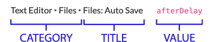

VS Code¶
Table of Contents¶
Resources¶
See also
Visual Studio Code Docs
Intro > Getting Started Video
Five minute hello world tour which happens to use Python.User Guide > User Interface
High level guide to the layout and what each part does.Getting Started > Tips and Tricks
Introduction to some of the most essential features such as the command palette, quick open, zen mode; editor shortcuts like how to select a line or quickly move or copy it up or down; and navigating around and between files via code symbols and history.User Guide > Basic Editing
Oddly focuses less on editing than the Tips and Tricks page. Searching and replacing within and across files, advanced selection, formatting and indentation.Getting Started > Default Keyboard Shortcuts
Covers how to access currently defined keyboard shortcuts, as well as listing the default shortcuts for (I presume) your detected OS. This is also where to find out how to make your own keyboards shortcuts (keybindings) and troubleshoot them if needed.User Guide > Code Navigation
Covers the powerful features for quickly finding and getting to the right parts of your codebase via quick open, toggling history and open editors, breadcrumbs, and code navigation. Briefly mentions navigating errors and quick fixes.Python Tutorial
The tutorial for writing Python using VS Code. A great deal of it is either installation and setup or focused on features we aren’t using like Jupyter Notebooks or Django. However, following the Hello World steps could be helpful.Editing Python in Visual Studio Code
Covers the editor features provided by the Python extension.(PDF) Keyboard shortcuts for Windows, macOS, Linux
Keyboard shortcut cheat sheet for each OS.Visual Studio Code Docs
VS Code documentation home page.
Third party tutorials
Visual Studio Code Python for Beginners: Hello World & Beyond
An intro to VS Code for Python beginners. It’s made by a professional programmer who doesn’t know Python so you get to see him figure things out as he goes along. (Recorded by a Windows user.)Learn Python 3: Visual Studio Code for Beginners
An in-depth walk-through via a Python hello world script. Covers core features like the activity bar, file explorer, terminal, split editors, command palette, settings, and workspaces. Python specific topics selecting an interpreter, linter, and formatter using virtual environments. (Recorded by a Windows user.)Visual Studio Code Crash Course
An in-depth walk-through of core features like layout, search and replace, file navigation, keyboard shortcuts, customizations, the terminal and SCM. It’s detailed with well labeled time markers so it’s easy to skip around. (Recorded by a Mac user.)
Essential Keyboard Shortcuts¶
Editor
Shortcut |
Action |
|---|---|
⌘L |
Select line |
⇧⌘K |
Delete line |
⌘/ |
Toggle (un/)comment line |
Navigation
Shortcut |
Action |
|---|---|
⇧⌘P |
Command Palette |
⌘P |
Quick Open File |
⌘B |
Toggle Sidebar |
⌘J |
Toggle Panel |
⌃` |
Toggle Terminal |
Editor
Shortcut |
Reverse |
Action |
|---|---|---|
⌘Enter |
⇧⌘Enter |
Add line (above, below) |
⌥↑ |
⌥↓ |
Move line (up, down) |
⇧⌥↑ |
⇧⌥↓ |
Copy line (up, down) |
⌘] |
⌘[ |
(Indent, Outdent) |
⌘Z |
⇧⌘Z |
(Undo, Redo) |
Key
|
Command |
|
Control |
|
Option |
|
Shift |
|
Up arrow |
|
Down arrow |
Editor
Shortcut |
Action |
|---|---|
⌃L |
Select line |
⇧⌃K |
Delete line |
⌃/ |
Toggle (un/)comment line |
Navigation
Shortcut |
Action |
|---|---|
⇧⌃P |
Command Palette |
⌃P |
Quick Open File |
⌃B |
Toggle Sidebar |
⌃J |
Toggle Panel |
⌃` |
Toggle Terminal |
Editor
Shortcut |
Reverse |
Action |
|---|---|---|
⌃Enter |
⇧⌃Enter |
Add line (above, below) |
Alt↑ |
Alt↓ |
Move line (up, down) |
⇧Alt↑ |
⇧Alt↓ |
Copy line (up, down) |
⌃] |
⌃[ |
(Indent, Outdent) |
⌃Z |
⇧⌃Z |
(Undo, Redo) |
Key
|
Control |
|
Shift |
|
Up arrow |
|
Down arrow |
Extensions¶
Python
Support for the Python language.
Live Share
Features for remote collaboratively editing.
Editor Config
Ensure consistent code formatting among different editors that employ it as well as among multiple project contributors.
Create a file in your project dir or home dir named .editorconfig and append
at least the following:
root = true
[*.py]
indent_style = space
indent_size = 4
tab_width = 4
Suggested Settings¶
Below are some of the settings that I prefer and recommend. Each section includes a description of what the change will do followed by the setting(s) to change.
Instructions¶
You can change your settings by either modifying your settings.json
file or using the Settings UI, whichever you find easiest.
On the left side of each section is a JSON dictionary containing the relevant
settings for the settings.json file.
Add the contents of the dictionary for the setting you want to change from this
document into the dictionary in your settings.json file.
Use the Preferences: Open Settings (JSON) command from the command palette to open your
settings.jsonfile.Make sure there’s a
,at the end of the last line inside the dictionary in thesettings.jsonfile.Copy the the part of the JSON from this document that is inside the
{}.Paste it inside the dictionary in the
settings.jsonfile, just above the last}in the file.
On the right side of each section is a list of relevant settings from the Settings UI.
Each shows the category that the setting is listed under from left of the Settings UI followed by the setting name and value.
Use the Preferences: Open Settings (UI) command from the command palette.
Copy the setting title from this document and paste it in the Search settings input box.
You can confirm that it is the correct setting by checking the categories on the left of the Settings UI against the path listed to the setting in this document.
Change the value of the setting to match value show on the right of the setting in this document.
See also
Hide Open Editors¶
In the Explorer don’t show the “open editors” section.
{
"explorer.openEditors.visible": 0
}
Minimap¶
Make the minimap prettier and hide it by default. (You can open it using the View: Toggle Minimap command.)
{
"editor.minimap.enabled": false,
"editor.minimap.renderCharacters": false,
"editor.minimap.maxColumn": 200,
"editor.minimap.showSlider": "always"
}
Reduce preview mode¶
When opening files via Quick Open (⌘P / ⌃P) don’t start in preview mode.
{
"workbench.editor.enablePreviewFromQuickOpen": false
}
Disable notices¶
Disable tips and startup pages.
{
"workbench.startupEditor": "none",
"workbench.tips.enabled": false,
"python.showStartPage": false
}
Highlight cursor line¶
In the editor highlight the line your cursor is currently on.
{
"editor.renderLineHighlight": "all",
"editor.renderLineHighlightOnlyWhenFocus": true
}
Disable suggestions¶
Suggestions are a great feature but they may interfere with retaining information as you’re learning. They can make the interface a bit noisy. These settings disable them, though they can still be triggered using a shortcut key.
{
"editor.acceptSuggestionOnCommitCharacter": false,
"editor.suggestOnTriggerCharacters": false,
"editor.parameterHints.enabled": false,
"editor.quickSuggestions": {
"other": false,
"comments": false,
"strings": false
},
}
Git¶
If you use the EditorConfig extension, disable the built-in whitespace handling features as it is not compatible.
{
"git.autofetch": true,
}